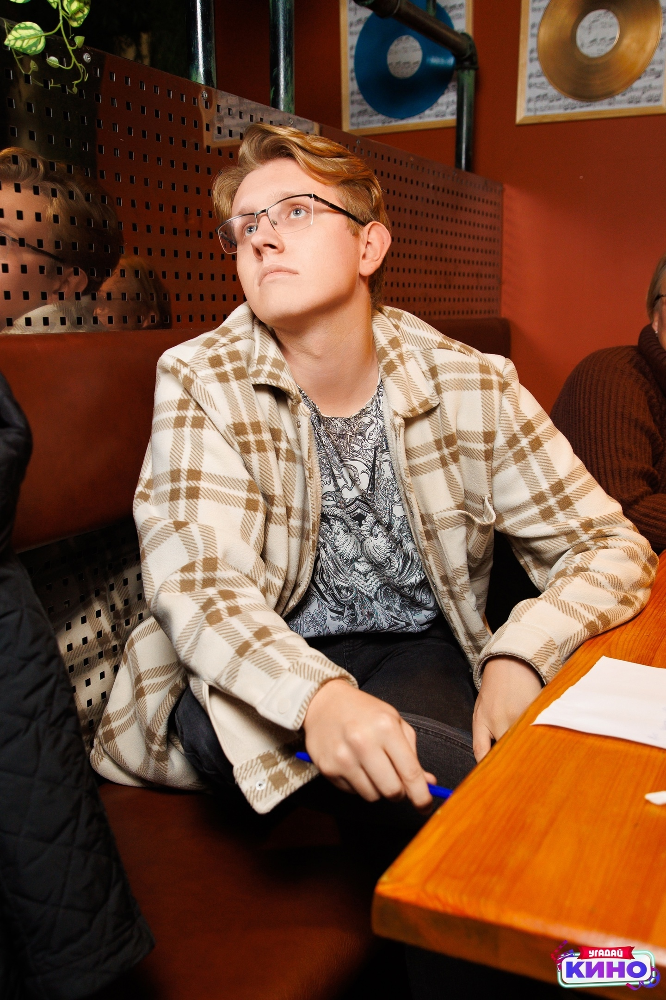

Убиенных Антон Андреевич
Это я

Кратко обо мне:
Я Антон, умею высушивать пинту пива залпом, так что никто не умеет.
Я родилcя в городе Архангельск, там в целом классно, у меня есть кошка и большая бутылка самогона(без осуждений). Моя жизненная цель - очень много выпить самогона и поесть шашлыка.
Мои интересы:
- Пить
- Играть в танки
- Вкусно гренок с пивом бахнуть
- Пить пиво и кушать том ям